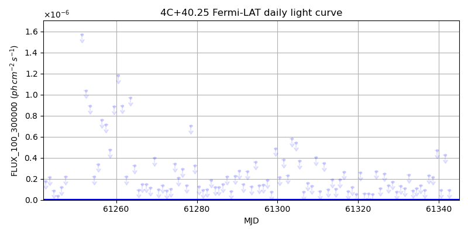
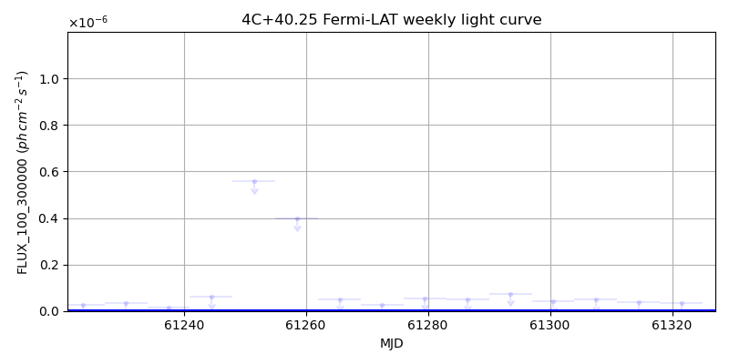
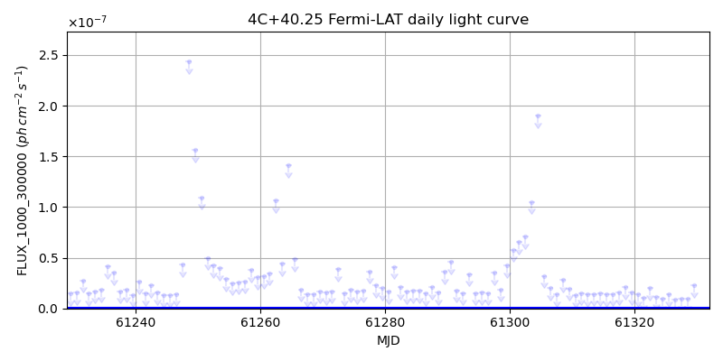
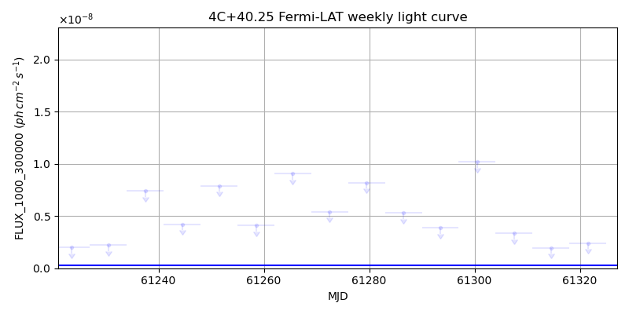

LAT Lightcurve site: https://fermi.gsfc.nasa.gov/ssc/data/access/lat/msl_lc/source/4C_p40d25
NED: Query
Time of last update of this page: UT: 2026-10-24 15:22 (MJD: 61337.640)
| Property | Value |
|---|---|
| R.A. | 10:23:11.52 |
| Dec. | 39:48:14.4 |
| z | 1.254 |
| 3FGL SpectrumType | PowerLaw |
| 3FGL PL Index | 2.73 |
| 3FGL Flux_100_300000 | 1.53e-08 1 / (s cm2) |
| 3FGL Flux_1000_300000 | 2.88e-10 1 / (s cm2) |
| 3FGL Flux >200 GeV | 3.08e-14 1 / (s cm2) |
| 3FGL Extrap. Crab >200 GeV | 0.00 |
| 3FGL Flux After EBL Absorption >200GeV | 1.85e-16 1 / (s cm2) |
| 3FGL EBL Crab Fraction >200GeV | 0.00 |

| MJD | dMJD | Flux | dFlux | Frac3FGL | FracCrab>200GeV | EBLFracCrab>200GeV |
|---|---|---|---|---|---|---|
| 61332.50 | 0.50 | 2.35e-07 | 0.00e+00 | 0.00 | 0.00 | 0.00 |
| 61333.50 | 0.50 | 8.97e-08 | 0.00e+00 | 0.00 | 0.00 | 0.00 |
| 61334.50 | 0.50 | 1.12e-07 | 0.00e+00 | 0.00 | 0.00 | 0.00 |
| 61335.50 | 0.50 | 1.37e-07 | 0.00e+00 | 0.00 | 0.00 | 0.00 |
| 61336.50 | 0.50 | 9.09e-08 | 0.00e+00 | 0.00 | 0.00 | 0.00 |

| MJD | dMJD | Flux | dFlux | Frac3FGL | FracCrab>200GeV | EBLFracCrab>200GeV |
|---|---|---|---|---|---|---|
| 61300.50 | 3.50 | 4.34e-08 | 0.00e+00 | 0.00 | 0.00 | 0.00 |
| 61307.50 | 3.50 | 4.87e-08 | 0.00e+00 | 0.00 | 0.00 | 0.00 |
| 61314.50 | 3.50 | 3.77e-08 | 0.00e+00 | 0.00 | 0.00 | 0.00 |
| 61321.50 | 3.50 | 3.45e-08 | 0.00e+00 | 0.00 | 0.00 | 0.00 |
| 61328.50 | 3.50 | 6.60e-08 | 0.00e+00 | 0.00 | 0.00 | 0.00 |

| MJD | dMJD | Flux | dFlux | Frac3FGL | FracCrab>200GeV | EBLFracCrab>200GeV |
|---|---|---|---|---|---|---|
| 61332.50 | 0.50 | 9.85e-09 | 0.00e+00 | 0.00 | 0.00 | 0.00 |
| 61333.50 | 0.50 | 1.38e-08 | 0.00e+00 | 0.00 | 0.00 | 0.00 |
| 61334.50 | 0.50 | 1.52e-08 | 0.00e+00 | 0.00 | 0.00 | 0.00 |
| 61335.50 | 0.50 | 1.93e-08 | 0.00e+00 | 0.00 | 0.00 | 0.00 |
| 61336.50 | 0.50 | 2.05e-08 | 0.00e+00 | 0.00 | 0.00 | 0.00 |

| MJD | dMJD | Flux | dFlux | Frac3FGL | FracCrab>200GeV | EBLFracCrab>200GeV |
|---|---|---|---|---|---|---|
| 61300.50 | 3.50 | 1.02e-08 | 0.00e+00 | 0.00 | 0.00 | 0.00 |
| 61307.50 | 3.50 | 3.38e-09 | 0.00e+00 | 0.00 | 0.00 | 0.00 |
| 61314.50 | 3.50 | 1.97e-09 | 0.00e+00 | 0.00 | 0.00 | 0.00 |
| 61321.50 | 3.50 | 2.41e-09 | 0.00e+00 | 0.00 | 0.00 | 0.00 |
| 61328.50 | 3.50 | 2.32e-09 | 0.00e+00 | 0.00 | 0.00 | 0.00 |
--------------------------------------------------------- Using user-supplied coords: 10:23:11.52 39:48:14.4 2000 --------------------------------------------------------- FLWO UT night of: 2026-10-25 Local Sid. @ Midnight: 01:50 Sunset (-15.0) (local, UT): 18:49 01:49 Sunrise (-15.0) (local, UT): 05:27 12:27 Moonrise (local, UT): Moonset (local, UT): Moon phase: 0.99 --------------------------------------------------------- AzTime LSID UT Obj_el Obj_az Mn_el Mn_az Sep. --------------------------------------------------------- 18:49 20:39 01:49 -14.6 339.3 26.2 94.5 118.8 19:19 21:09 02:19 -16.5 345.0 32.4 98.6 118.5 19:49 21:39 02:49 -17.9 350.9 38.6 103.2 118.3 20:19 22:09 03:19 -18.6 356.9 44.7 108.4 118.1 20:49 22:39 03:49 -18.6 3.0 50.6 114.6 117.9 21:19 23:09 04:19 -17.9 9.1 56.2 122.3 117.6 21:49 23:39 04:49 -16.6 15.0 61.2 132.2 117.4 22:19 00:09 05:19 -14.6 20.6 65.5 145.3 117.2 22:49 00:39 05:49 -12.1 26.0 68.4 162.2 117.0 23:19 01:10 06:19 -9.0 31.0 69.4 182.2 116.8 23:49 01:40 06:49 -5.2 35.6 68.2 202.0 116.6 00:19 02:10 07:19 -0.8 39.9 65.1 218.6 116.5 00:49 02:40 07:49 2.9 43.8 60.8 231.3 116.3 01:19 03:10 08:19 7.4 47.3 55.7 240.9 116.1 01:49 03:40 08:49 12.2 50.6 50.1 248.5 115.9 02:19 04:10 09:19 17.2 53.5 44.3 254.6 115.7 02:49 04:40 09:49 22.4 56.1 38.2 259.8 115.5 03:19 05:10 10:19 27.8 58.5 32.1 264.4 115.3 03:49 05:40 10:49 33.3 60.5 26.0 268.5 115.1 04:19 06:10 11:19 38.9 62.2 19.9 272.4 114.8 04:49 06:40 11:49 44.6 63.6 13.8 276.2 114.6 05:19 07:11 12:19 50.4 64.5 7.8 279.9 114.4 05:27 07:18 12:27 51.8 64.6 6.2 280.9 114.3 --------------------------------------------------------- Moon up all night, no dark time. Dark hours >55 deg.: 0.00